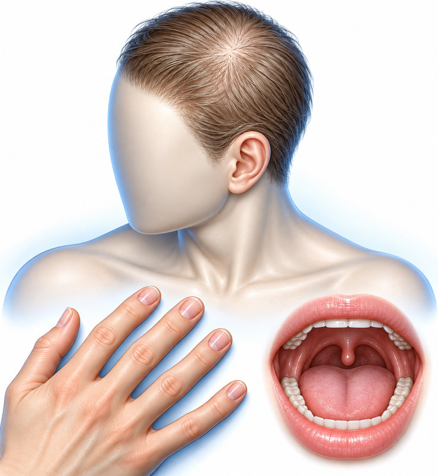
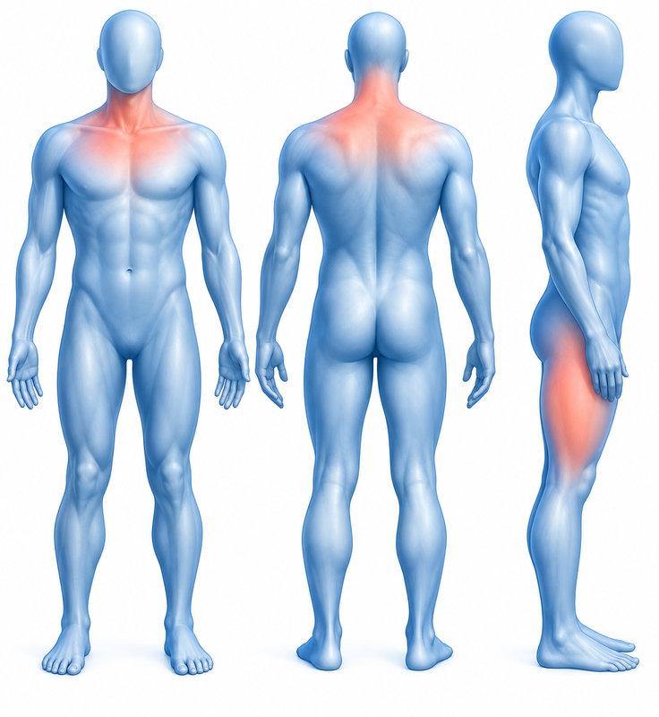
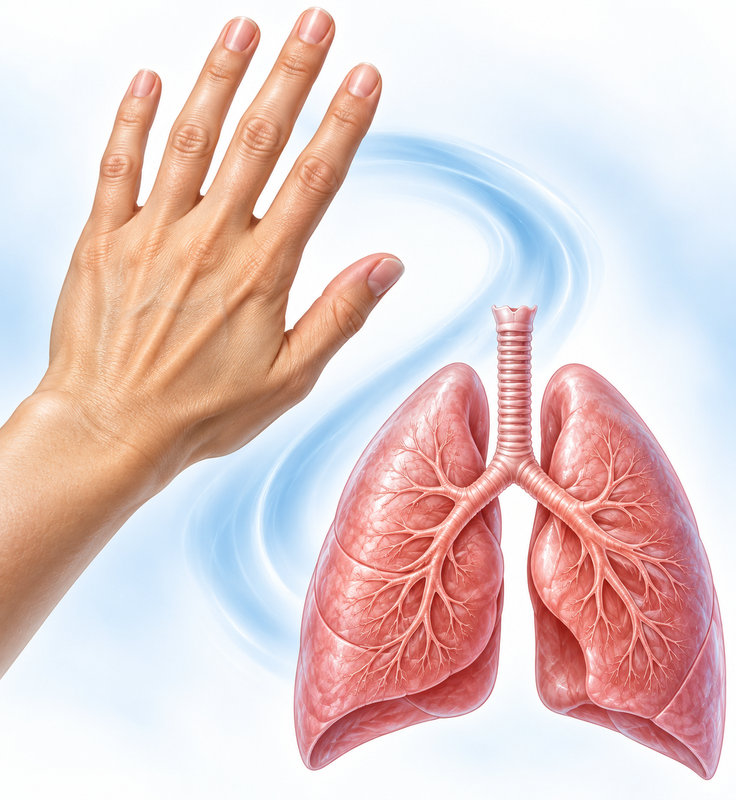

의료진 강의 학습
루푸스와 피부근염
피부에서 전신으로
피부로 먼저 보이는 루푸스와 피부근염: 장기 침범·암 평가 연결
피부는 전신 질환을 의심하게 하는 첫 단서가 된다

급성·아급성·만성 피부홍반루푸스를 구분한다
콧등·양 볼·비구순주름·자외선의 관계
일광 노출부의 대칭 발진과 anti-Ro/SS-A 연관성
원반모양홍반루푸스(DLE)의 진행 소견
루푸스 특이 발진과 나란히 살핀다
Gottron 구진과 Heliotrope rash
피부근염의 기타 특징적 소견

손 피부의 특징적 변화에서 전신 평가로

강의에서 제시한 위험의 크기와 시간 창
형태 하나보다 가려움·각질·중심부·노출부를 함께 본다
루푸스와 피부근염의 학습 포인트
피부로 먼저 보이는 루푸스와 피부근염: 장기 침범·암 평가 연결